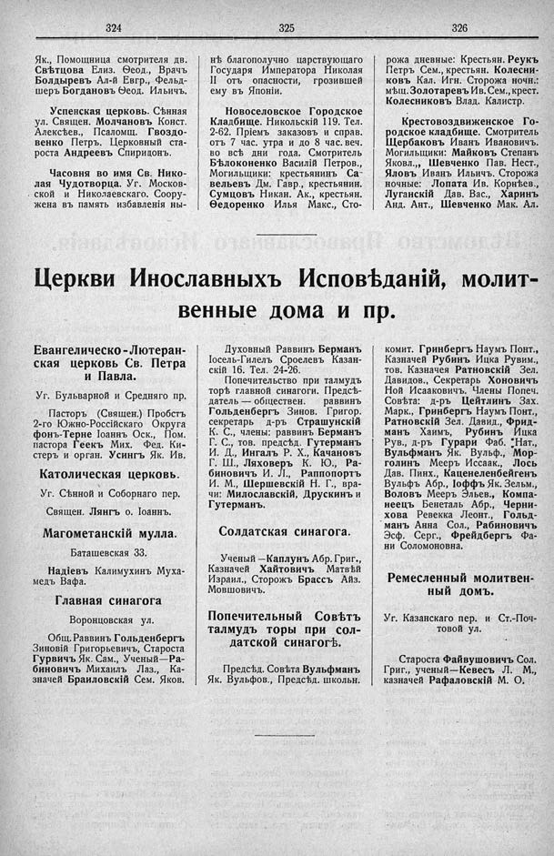

Лист источника 240
Скан

Распознанный текст
324
Як., Помощница смотрителя дв.
Свѣтцова Елиз. Ѳеод., Врачъ
Болдыревъ Ал-й Евгр., Фельд-
шеръ Богдановъ Ѳеод. Ильичъ.
Успенская церковь. Сѣнная
ул. Священ. Молчановъ Конст.
Алексѣев., Псаломщ. Гвоздо-
венко Петръ. Церковный ста-
роста Андреевъ Спиридонъ.
Часовня во имя Св. Нико-
лая Чудотворца. Уг. Москов-
ской и Николаевскаго. Соору-
жена въ память избавленія ны-
325
нѣ благополучно царствующаго
Государя Императора Николая
II отъ опасности, грозившей
ему въ Японіи.
Новоселовское Городское
Кладбище. Никольскій 119. Тел.
2-62. Пріемъ заказовъ и справ.
отъ 7 час. утра и до 8 час. веч.
во всѣ дни года. Смотритель
Бѣлоконенко Василій Петров.,
Могильщики: крестьянинъ Са-
вельевъ Дм. Гавр., крестьянин.
Сумцовъ Никан. Ак., крестьян.
Ѳедоренко Илья Макс., Сто-
326
рожа дневные: Крестьян. Реукъ
Петръ Сем., крестьян. Колесни-
ковъ Кал. Игн. Сторожа ночн.:
мѣщ. Золотаревъ Ив. Сем., крест.
Колесниковъ Влад. Калистр.
Крестовоздвиженское Го-
родское кладбище. Смотритель
Щербаковъ Иванъ Ивановичъ.
Могильщики: Майковъ Степанъ
Яковл., Шевченко Пав. Нест.,
Яловъ Иванъ Ильичъ. Сторожа
ночные: Лопата Ив. Корнѣев.,
Луганскій Дав. Вас., Харинъ
Анд. Ант., Шевченко Мак. Ал.
Церкви Инославныхъ Исповѣданій, молит-
венные дома и пр.
Евангелическо-Лютеран-
ская церковь Св. Петра
и Павла.
Уг. Бульварной и Средняго пр.
Пасторъ (Священ.) Пробстъ
2-го Южно-Россійскаго Округа
фонъ-Терне Іоаннъ Оск., Пом.
пастора Геекъ Мих. Фед. Ки-
стеръ и орган. Усингъ Як. Ив.
Католическая церковь.
Уг. Сѣнной и Соборнаго пер.
Священ. Лянгъ о. Іоаннъ.
Магометанскій мулла.
Баташевская 33.
Надіевъ Калимухинъ Муха-
медъ Вафа.
Главная синагога
Воронцовская ул.
Общ. Раввинъ Гольденбергъ
Зиновій Григорьевичъ, Староста
Гурвичъ Як. Сам., Ученый—Ра-
биновичъ Михаилъ Лаз., Ка-
значей Браиловскій Сем. Яков.
Духовный Раввинъ Берманъ
Іосель-Гилель Сроелевъ Казан-
скій 16. Тел. 24-26.
Попечительство при талмудъ
торѣ главной синагоги. Предсѣ-
датель — обществен. раввинъ
Гольденбергъ Зинов. Григор.
секретарь д-ръ Страшунскій
К. С., члены: раввинъ Берманъ
Г. С., тов. предсѣд. Гутерманъ
И. Д., Ингалъ Р. Х., Качановъ
Г. Ш., Ляховеръ К. Ю., Ра-
биновичъ И. Л., Раппопортъ
И. М., Шершевскій Н. Г., вра-
чи: Милославскій, Друскинъ и
Гутерманъ.
Солдатская синагога.
Ученый—Каплунъ Абр. Григ.,
Казначей Хайтовичъ Матвѣй
Израил., Сторожъ Брассъ Айз.
Мовшовичъ.
Попечительный Совѣтъ
талмудъ торы при сол-
датской синагогѣ.
Предсѣд. Совѣта Вульфманъ
Як. Вульфов., Предсѣд. школьн.
комит. Гринбергъ Наумъ Понт.,
Казначей Рубинъ Ицка Рувим.,
тов. Казначея Ратновскій Зел.
Давидов., Секретарь Хоновичъ
Ной Исааковичъ. Члены Попеч.
Совѣта: д-ръ Цейтлинъ Зах.
Марк., Гринбергъ Наумъ Понт.,
Ратновскій Зел. Давид., Фрид-
манъ Хаимъ, Рубинъ Ицка
Рув., д-ръ Гурари Фаб. Нат.,
Вульфманъ Як. Вульф., Мор-
голинъ Мееръ Иссаак., Лось
Дав. Пинх., Каценеленбейгенъ
Вульфъ Абр., Іоффъ Як. Зельм.,
Воловъ Мееръ Эльев., Компа-
неецъ Бенеталь Абр., Черни-
хова Ревекка Леонт., Гольд-
манъ Анна Сол., Рабиновичъ
Эсф. Серг., Фрейдбергъ Фа-
ни Соломоновна.
Ремесленный молитвен-
ный домъ.
Уг. Казанскаго пер. и Ст.-Поч-
товой ул.
Староста Файвушовичъ Сол.
Григ., ученый—Кевесъ Л. М.,
казначей Рафаловскій М. О.